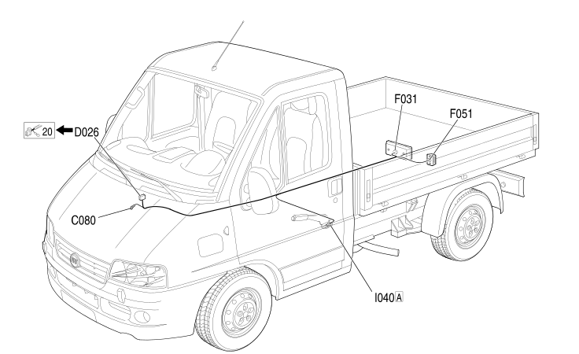

24 RIGHT LONGITUDINAL
- Path
- Electrical equipment > 2 WIRING > 24 RIGHT LONGITUDINAL
- Kind
- wiring harness
- Applies to
- all engines; all production periods; only with equipment: Chassis cab
- Interactive page
- https://sloeber94.github.io/elrnDB-fDct/en/#/244002160
Applies to: all engines; all production periods; only with equipment: Chassis cab

Topics that link to this page (21)
- C031 RIGHT REAR EARTH (RIGHT LONGITUDINAL)
- C080 RIGHT REAR LIGHT CLUSTER EARTH (RIGHT LONGITUDINAL)
- D026 DASHBOARD/RIGHT REAR COUPLING (RIGHT LONGITUDINAL)
- D026 DASHBOARD/RIGHT REAR COUPLING (RIGHT LONGITUDINAL)
- D089 PARKING SENSOR COUPLING (RIGHT LONGITUDINAL)
- D150 RIGHT REAR/RIGHT SWING DOOR COUPLING (RIGHT LONGITUDINAL)
- D171A RIGHT REAR/LUGGAGE COMPARTMENT COUPLING (RIGHT LONGITUDINAL)
- D171B RIGHT REAR/LUGGAGE COMPARTMENT COUPLING (RIGHT LONGITUDINAL)
- D172A RIGHT REAR/OPTIONAL DASHBOARD COUPLING (RIGHT LONGITUDINAL)
- D172B RIGHT REAR/OPTIONAL DASHBOARD COUPLING (RIGHT LONGITUDINAL)
- D173 RIGHT REAR/SLIDING SIDE DOOR BUTTON COUPLING (RIGHT LONGITUDINAL)
- F031 RIGHT REAR LIGHT CLUSTER (RIGHT LONGITUDINAL)
- F031 RIGHT REAR LIGHT CLUSTER (RIGHT LONGITUDINAL)
- F051 RIGHT NUMBER PLATE LIGHT (RIGHT LONGITUDINAL)
- I021A SWITCH ON REAR DOOR (RIGHT LONGITUDINAL)
- I021B SWITCH ON REAR DOOR (RIGHT LONGITUDINAL)
- I040A HANDBRAKE SWITCH (RIGHT LONGITUDINAL)
- M084A PARKING SENSOR CONTROL UNIT (RIGHT LONGITUDINAL)
- M084B PARKING SENSOR CONTROL UNIT (RIGHT LONGITUDINAL)
- P044 PARKING SENSOR SPEAKER (RIGHT LONGITUDINAL)
- P052 REAR CURRENT SOCKET (RIGHT LONGITUDINAL)